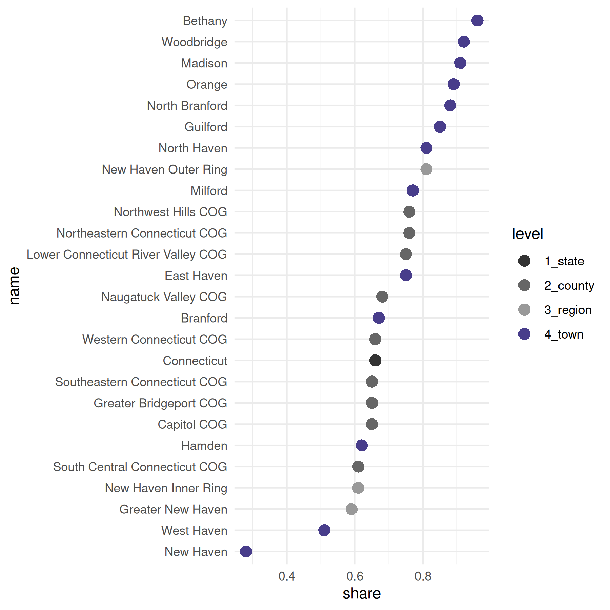
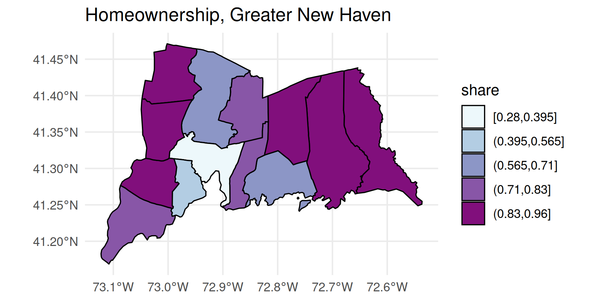
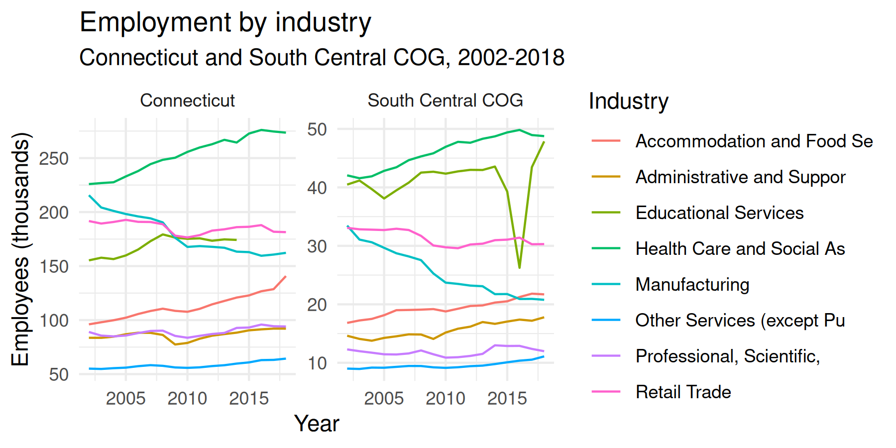
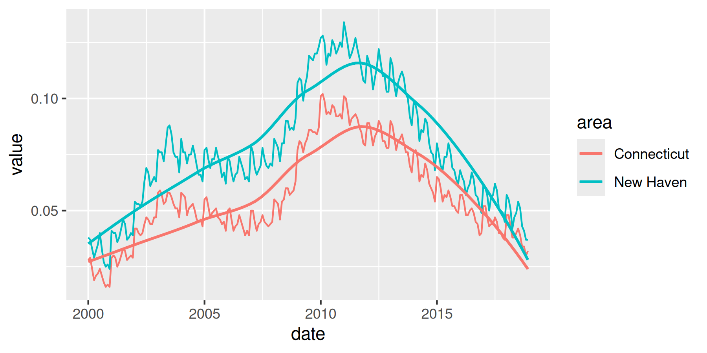

The tables I’m working with are B01003, total population; B03002, race and Latino ethnicity; and B25003, housing tenure. It’s easiest to save these in a named list, then map over the list calling multi_geo_acs() for each table number.
yr <- 2023
table_nums <- list(
total_pop = "B01003",
race = "B03002",
tenure = "B25003"
)Fetching data from ACS
I’m pulling out the entries in the cwi dataset cwi::regions (a list) to only include the Greater New Haven-area ones. Then I fetch the ACS tables for those regions, their towns, and New Haven County.
gnh_regions <- regions[c("Greater New Haven", "New Haven Inner Ring", "New Haven Outer Ring")]
gnh_data <- map(table_nums, multi_geo_acs,
year = yr, towns = regions$`Greater New Haven`,
regions = gnh_regions, state = "09", sleep = 1,
verbose = FALSE
)
gnh_data$total_pop
#> # A tibble: 26 × 9
#> year level state county geoid name variable estimate moe
#> <dbl> <fct> <chr> <chr> <chr> <chr> <chr> <dbl> <dbl>
#> 1 2023 1_state <NA> <NA> 09 Connecticut B01003_… 3598348 NA
#> 2 2023 2_county Connecticut <NA> 09110 Capitol COG B01003_… 969029 NA
#> 3 2023 2_county Connecticut <NA> 09120 Greater Brid… B01003_… 326296 NA
#> 4 2023 2_county Connecticut <NA> 09130 Lower Connec… B01003_… 174983 NA
#> 5 2023 2_county Connecticut <NA> 09140 Naugatuck Va… B01003_… 452303 NA
#> 6 2023 2_county Connecticut <NA> 09150 Northeastern… B01003_… 95829 NA
#> 7 2023 2_county Connecticut <NA> 09160 Northwest Hi… B01003_… 112848 NA
#> 8 2023 2_county Connecticut <NA> 09170 South Centra… B01003_… 566803 NA
#> 9 2023 2_county Connecticut <NA> 09180 Southeastern… B01003_… 279025 NA
#> 10 2023 2_county Connecticut <NA> 09190 Western Conn… B01003_… 621232 NA
#> # ℹ 16 more rowsNeighborhoods with corresponding tracts or block groups are included for 4 cities (see neighborhood_tracts). Pass those to get neighborhood-level aggregates.
multi_geo_acs("B01003",
towns = "New Haven",
neighborhoods = new_haven_tracts,
nhood_geoid = "geoid",
year = yr
)
#> # A tibble: 11 × 9
#> year level state county geoid name variable estimate moe
#> <dbl> <fct> <chr> <chr> <chr> <chr> <chr> <dbl> <dbl>
#> 1 2023 1_state <NA> <NA> 09 Conn… B01003_… 3598348 NA
#> 2 2023 2_county Connecticut <NA> 09110 Capi… B01003_… 969029 NA
#> 3 2023 2_county Connecticut <NA> 09120 Grea… B01003_… 326296 NA
#> 4 2023 2_county Connecticut <NA> 09130 Lowe… B01003_… 174983 NA
#> 5 2023 2_county Connecticut <NA> 09140 Naug… B01003_… 452303 NA
#> 6 2023 2_county Connecticut <NA> 09150 Nort… B01003_… 95829 NA
#> 7 2023 2_county Connecticut <NA> 09160 Nort… B01003_… 112848 NA
#> 8 2023 2_county Connecticut <NA> 09170 Sout… B01003_… 566803 NA
#> 9 2023 2_county Connecticut <NA> 09180 Sout… B01003_… 279025 NA
#> 10 2023 2_county Connecticut <NA> 09190 West… B01003_… 621232 NA
#> 11 2023 3_town Connecticut South Central… 0917… New … B01003_… 132893 76Aggregating and analyzing data
The total population data is very straightforward, as it only has one variable, B01003_001. The tibble returned has the GEOID, except for custom geographies like regions; the name of each geography, including the names of each region; the variable codes; estimates; margins of error at the default 90% confidence level; the geographic level, numbered in order of decreasing size; and the counties of the towns.
The race and ethnicity table will require some calculations, using the brilliantly-titled camiller package:
- Using
label_acs(), join theracetibble with thecwi::acs_varsdataset to get variable labels. Oftentimes, these labels need to be separated by their"!!"delimeter. - Group by the geographic level, county, and name.
- Call
camiller::add_grps()with a list of racial groups and their labels’ positions in thelabelcolumn. This gives estimates and, optionally, margins of error for aggregates -
camiller::calc_shares()then gives shares of each group’s estimate over the"total"denominator.
gnh_data$race |>
label_acs(year = yr) |>
group_by(level, name) |>
add_grps(list(total = 1, white = 3, black = 4, latino = 12, other = 5:9), group = label) |>
calc_shares(group = label, denom = "total")
#> # A tibble: 130 × 5
#> # Groups: level, name [26]
#> level name label estimate share
#> <fct> <chr> <fct> <dbl> <dbl>
#> 1 1_state Connecticut total 3598348 NA
#> 2 1_state Connecticut white 2265780 0.63
#> 3 1_state Connecticut black 355413 0.1
#> 4 1_state Connecticut latino 640668 0.18
#> 5 1_state Connecticut other 336487 0.09
#> 6 2_county Capitol COG total 969029 NA
#> 7 2_county Capitol COG white 590481 0.61
#> 8 2_county Capitol COG black 111597 0.12
#> 9 2_county Capitol COG latino 168439 0.17
#> 10 2_county Capitol COG other 98512 0.1
#> # ℹ 120 more rowsWith the tenure table, it’s easiest to separate the labels by "!!". Here the table can be wrangled into shares of households that are owner-occupied.
homeownership <- gnh_data$tenure |>
label_acs(year = yr) |>
separate(label, into = c("total", "tenure"), sep = "!!", fill = "left") |>
select(level, name, tenure, estimate) |>
group_by(level, name) |>
calc_shares(group = tenure, denom = "Total") |>
filter(tenure == "Owner occupied")
homeownership
#> # A tibble: 26 × 5
#> # Groups: level, name [26]
#> level name tenure estimate share
#> <fct> <chr> <fct> <dbl> <dbl>
#> 1 1_state Connecticut Owner occupied 939912 0.66
#> 2 2_county Capitol COG Owner occupied 254424 0.65
#> 3 2_county Greater Bridgeport COG Owner occupied 77362 0.65
#> 4 2_county Lower Connecticut River Valley COG Owner occupied 55387 0.75
#> 5 2_county Naugatuck Valley COG Owner occupied 120630 0.68
#> 6 2_county Northeastern Connecticut COG Owner occupied 29835 0.76
#> 7 2_county Northwest Hills COG Owner occupied 35683 0.76
#> 8 2_county South Central Connecticut COG Owner occupied 137908 0.61
#> 9 2_county Southeastern Connecticut COG Owner occupied 74923 0.65
#> 10 2_county Western Connecticut COG Owner occupied 153760 0.66
#> # ℹ 16 more rowsVisual sketches
geo_level_plot() gives a quick visual overview of the homeownership rates, highlighting town-level values.
homeownership |>
geo_level_plot(value = share, hilite = "darkslateblue", type = "point")
acs_quick_map() gives a quick map sketch of the rates. This function uses the Jenks algorithm for making breaks with jenks(). This algorithm is well suited for visually displaying larger inequalities, but the number of breaks you give it won’t necessarily be the number of breaks returned.This function lets us see whether there’s a geographic distribution of this data with minimal work.
tenure_map <- homeownership |>
filter(level == "4_town") |>
quick_map(
value = share, level = "town", color = "black", linewidth = 0.4,
title = "Homeownership, Greater New Haven", palette = "BuPu"
)
tenure_map
Since this returns a ggplot object with sf data, we can add additional ggplot functions, such as labeling, themes, or additional scales or geoms.
Batch output
Say as part of a pipeline, you need to do some calculations, write different sections of a data frame to CSV files to pass along to a colleague or refer to later, and then continue on to some more calculations. batch_csv_dump() takes either a list of data frames or a data frame plus a column to split by, and writes out a set of CSV files, then lets you move along to the next step in your pipeline.
For example, I need to pull a table of populations by age group for several regions of Connecticut. I don’t need to split populations by gender, so I’ll add up male and female populations for each age group. I don’t actually need to more detailed age groups now, but I need to stash them in files for later, so I’ll aggregate, write a bunch of files, and then aggregate into broader age groups that I need for my current work.
new_haven_regions <- regions[c(
"Greater New Haven", "New Haven Inner Ring",
"New Haven Outer Ring", "Lower Naugatuck Valley",
"Greater Waterbury"
)]
age <- multi_geo_acs(
table = "B01001", year = yr, towns = NULL,
regions = new_haven_regions,
counties = c("New Haven County", "Fairfield County")
) |>
label_acs(year = yr) |>
# shortcut around tidyr::separate
separate_acs(into = c("sex", "age"), drop_total = TRUE) |>
filter(!is.na(age)) |>
mutate(age = forcats::as_factor(age)) |>
group_by(name, level, age) |>
summarise(estimate = sum(estimate)) |>
ungroup()
age |>
split(~name) |>
batch_csv_dump(base_name = "pop_by_age", bind = TRUE, verbose = TRUE) |>
group_by(level, name) |>
camiller::add_grps(list(ages00_04 = 1, ages05_17 = 2:4, ages00_17 = 1:4),
group = age, value = estimate
) |>
arrange(level, name, age)Employment trends
Quarterly Workforce Indicators
I’m also interested in learning about employment by industry over the past several years. qwi_industry() fetches county-level data by industry over time, either quarterly or annually. Here I’ll look at annual averages of all industries for South Central COG and Connecticut over the past 16 years. I’m filtering out the industry code “00”, which is the counts for all industries.
scc_employment <- qwi_industry(2002:2018, counties = "170", annual = TRUE) |>
mutate(location = "South Central COG")
ct_employment <- qwi_industry(2002:2018, annual = TRUE) |>
mutate(location = "Connecticut")
employment <- bind_rows(scc_employment, ct_employment) |>
filter(industry != "00") |>
inner_join(naics_codes |> select(-ind_level), by = "industry")
employment
#> # A tibble: 680 × 8
#> year state county industry emp payroll location label
#> <dbl> <chr> <chr> <chr> <dbl> <dbl> <chr> <chr>
#> 1 2002 09 170 11 385. NA South Central COG Agriculture, F…
#> 2 2002 09 170 21 31.2 NA South Central COG Mining, Quarry…
#> 3 2002 09 170 22 1093. NA South Central COG Utilities
#> 4 2002 09 170 23 11146. NA South Central COG Construction
#> 5 2002 09 170 31-33 33445. NA South Central COG Manufacturing
#> 6 2002 09 170 42 11496. NA South Central COG Wholesale Trade
#> 7 2002 09 170 44-45 32976. NA South Central COG Retail Trade
#> 8 2002 09 170 48-49 5738 NA South Central COG Transportation…
#> 9 2002 09 170 51 11863. NA South Central COG Information
#> 10 2002 09 170 52 10686. NA South Central COG Finance and In…
#> # ℹ 670 more rowsNext, say I want to look at the industries that were largest in the South Central COG in 2018, and see how those have changed both for the COG and statewide over this time period. I’ll filter employment, get the industries with the largest numbers of employees, then filter employment for just those industries and plot it.
top2018 <- employment |>
filter(year == 2018, county == "170") |>
top_n(8, emp) |>
pull(industry)
top2018
#> [1] "31-33" "44-45" "54" "56" "61" "62" "72" "81"
employment |>
filter(industry %in% top2018) |>
mutate(label = stringr::str_sub(label, 1, 25)) |>
mutate(Emp_1k = emp / 1000) |>
ggplot(aes(x = year, y = Emp_1k, color = label)) +
geom_line() +
labs(
x = "Year", y = "Employees (thousands)", title = "Employment by industry",
subtitle = "Connecticut and South Central COG, 2002-2018", color = "Industry"
) +
theme_minimal() +
facet_wrap(vars(location), scales = "free_y")
Local Area Unemployment Statistics
To look at unemployment rates over time, I can use laus_trend(). The LAUS covers smaller geographies than the QWI, so laus_trend() is set up to find data by a combination of state, counties, or towns. The LAUS API returns monthly data on labor force counts, employment counts, unemployed counts, and unemployment rate; laus_trend() lets you specify which of these measures to fetch.
unemployment <- laus_trend(c("New Haven", "New Haven County", "Connecticut"),
startyear = 2000, endyear = 2018, measures = "unemployment rate"
) |>
mutate(unemployment_rate = unemployment_rate / 100) |>
select(area, date, value = unemployment_rate)
unemployment
#> # A tibble: 456 × 3
#> area date value
#> <chr> <date> <dbl>
#> 1 Connecticut 2000-01-01 0.028
#> 2 New Haven 2000-01-01 0.038
#> 3 Connecticut 2000-02-01 0.029
#> 4 New Haven 2000-02-01 0.037
#> 5 Connecticut 2000-03-01 0.024
#> 6 New Haven 2000-03-01 0.033
#> 7 Connecticut 2000-04-01 0.019
#> 8 New Haven 2000-04-01 0.029
#> 9 Connecticut 2000-05-01 0.021
#> 10 New Haven 2000-05-01 0.032
#> # ℹ 446 more rows
unemp_plot <- ggplot(unemployment, aes(x = date, y = value, group = area, color = area)) +
geom_line() +
geom_smooth(se = FALSE, method = "loess", linewidth = 0.8)
unemp_plot